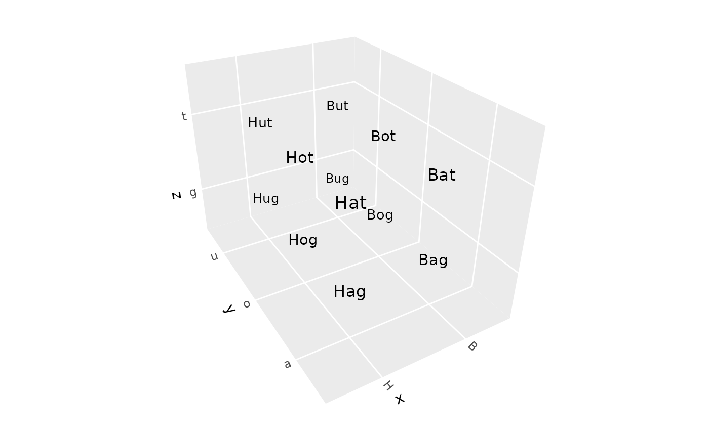
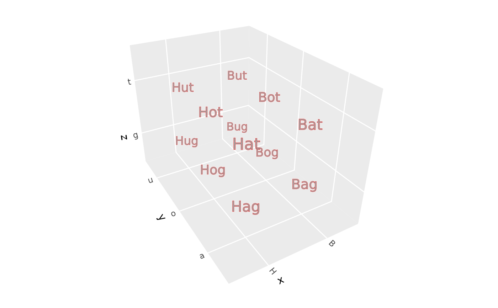
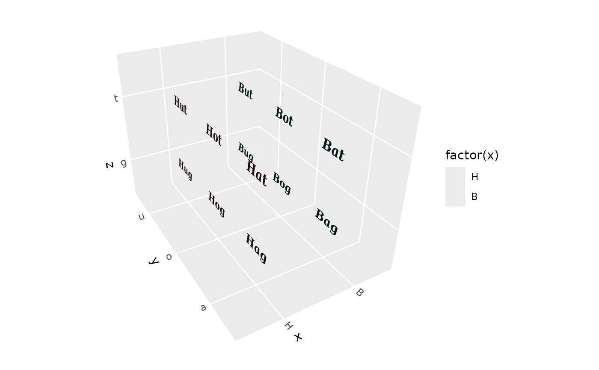

geom_text_3d() renders text labels in 3D space. Two rendering methods are
available: "billboard" (default) renders text as flat labels that always
face the camera, while "polygon" renders text as filled polygons that can
be oriented in any direction.
Usage
geom_text_3d(
mapping = NULL,
data = NULL,
position = "identity",
...,
method = c("billboard", "polygon"),
facing = "zmax",
coord = NULL,
aspect_adjust = 1,
light = NULL,
angle = 0,
nudge_x = 0,
nudge_y = 0,
nudge_z = 0,
size = 3.88,
hjust = 0.5,
vjust = 0.5,
lineheight = 1.2,
scale_depth = TRUE,
family = "sans",
weight = "normal",
italic = FALSE,
fontface = "plain",
spacing = 0,
tolerance = 0.01,
rule = "evenodd",
na.rm = FALSE,
show.legend = NA,
inherit.aes = TRUE
)
stat_text_3d(
mapping = NULL,
data = NULL,
geom = NULL,
position = "identity",
...,
method = c("billboard", "polygon"),
facing = "zmax",
coord = NULL,
aspect_adjust = 1,
light = NULL,
angle = 0,
nudge_x = 0,
nudge_y = 0,
nudge_z = 0,
size = 3.88,
hjust = 0.5,
vjust = 0.5,
lineheight = 1.2,
scale_depth = TRUE,
family = "sans",
weight = "normal",
italic = FALSE,
fontface = "plain",
spacing = 0,
tolerance = 0.01,
na.rm = FALSE,
show.legend = NA,
inherit.aes = TRUE
)Arguments
- mapping
Set of aesthetic mappings. See
ggplot2::aes().- data
A data frame containing the variables to plot.
- position
Position adjustment. Defaults to
"identity".- ...
Other arguments passed to the layer.
- method
Rendering method:
"billboard"(default) for flat camera-facing text, or"polygon"for 3D-oriented filled text.- facing
(Polygon method only) Direction the text should face. One of
"xmin","xmax","ymin","ymax","zmin","zmax"(default),"camera", a numeric vector of length 3, or acamera_facing()specification. Use"camera"with thecoordparameter to automatically face the camera. Ignored with a warning for billboard method.- coord
(Polygon method only) A
coord_3d()object. When provided: (1) iffacing = "camera", extracts rotation parameters automatically; (2) uses the coord'sratioandscalesparameters to correct text aspect ratio so text doesn't appear stretched. Ignored for billboard method.- aspect_adjust
(Polygon method only) Scalar multiplier for text height relative to width. Default is 1 (normal proportions). Values > 1 make text taller, values < 1 make text wider. When
coordis provided, this is multiplied by the computed aspect correction. Ignored for billboard method.- light
(Polygon method only) A lighting specification created by
light(), orNULLfor no lighting. When provided, text polygons are shaded based on their facing direction. Ignored for billboard method.- angle
Rotation angle in degrees. For polygon method, rotates around the facing axis. For billboard method, rotates in the view plane.
- nudge_x, nudge_y, nudge_z
Offset to apply to text position in data units.
- size
Font size in mm (same units as
ggplot2::geom_text()). Default is 3.88, which corresponds to approximately 11pt text.- hjust, vjust
Horizontal and vertical justification of text (0-1).
- lineheight
Line height multiplier for multi-line text.
- scale_depth
Logical; if TRUE (default), scale by depth for perspective effect. For billboard method, this scales the font size. For polygon method, this scales the outline linewidth (the polygon fill is always depth-scaled by the 3D projection).
- family
Font family.
- weight
(Polygon method only) Font weight: "normal", "bold", "thin", "light", etc.
- italic
(Polygon method only) Logical; use italic font variant.
- fontface
Font face (for billboard method): "plain", "bold", "italic", or "bold.italic".
- spacing
(Polygon method only) Additional letter spacing in em units.
- tolerance
(Polygon method only) Bezier curve tolerance for text outlines. Lower values give smoother curves but more vertices.
- rule
(Polygon method only) Fill rule for polygons with holes. Either "evenodd" (default) or "winding".
- na.rm
If TRUE, silently remove missing values.
- show.legend
Logical. Should this layer be included in the legends?
- inherit.aes
If TRUE, inherit aesthetics from the plot's default.
- geom
The geometric object to use. Defaults based on method.
- stat
The statistical transformation to use. Defaults based on method.
Methods
"billboard"(default): Fast, simple text rendering using native fonts. Text is always parallel to the view plane (like a billboard). Only uses thecolouraesthetic for text color."polygon": Renders text as filled polygon outlines. Text can be oriented to face any direction using thefacingparameter. Uses bothfill(text fill) andcolour(text outline) aesthetics.
Orientation (polygon method only)
The facing parameter controls which direction the text faces:
"zmax"(default): Text faces upward (readable from above)"xmin","xmax","ymin","ymax","zmin": Text faces toward the specified cube faceA numeric vector
c(x, y, z): Text faces the specified directioncamera_facing(...): Text faces the camera
The angle parameter rotates the text around its facing axis (in degrees).
With angle = 0, the text baseline is oriented as horizontally as possible
(parallel to the x-y plane when the facing direction allows).
Camera-facing text
For billboard method, text automatically faces the camera - no configuration needed.
For polygon method, there are two ways to make text face the camera:
Use
facing = "camera"with thecoordparameter (recommended):
my_coord <- coord_3d(pitch = 20, roll = -60, yaw = -30)
ggplot(df, aes(x, y, z = z, label = label)) +
geom_text_3d(method = "polygon", facing = "camera", coord = my_coord) +
my_coordPass
camera_facing()directly tofacing:
Aspect Ratio Correction
For polygon method, text can appear stretched if the x, y, and z axes have
different data ranges. Providing a coord_3d() object via the coord
parameter enables automatic aspect ratio correction based on the coord's
ratio and scales settings.
If other layers in your plot have different data ranges that affect the
final scale limits, you can fine-tune the correction with aspect_adjust:
aspect_adjust = 1(default): Use the computed correctionaspect_adjust > 1: Make text talleraspect_adjust < 1: Make text wider
Size and Scaling
Text size is specified in mm via the size parameter, matching the units
used by ggplot2::geom_text(). The default size of 3.88 corresponds to
approximately 11pt text.
Both methods use the same size units, so switching between "billboard"
and "polygon" methods with the same size value will produce similarly
sized text (assuming a typical 6 inch plot).
When scale_depth = TRUE (the default), text farther from the viewer
appears smaller, creating a natural perspective effect. For billboard
method, this scales the font size. For polygon method, this scales the
outline linewidth (the polygon fill is always depth-scaled by the 3D
projection).
Aesthetics
geom_text_3d() understands the following aesthetics (required in bold):
Both methods:
x, y, z, label
alpha
Billboard method:
colour- text colorsize- font size in mmfamily,fontfacehjust,vjustangle- rotation in view planelineheight
Polygon method:
fill- text fill colorcolour- text outline colorlinewidth- outline thickness
See also
camera_facing() for camera-facing specifications, text_outlines()
for text-to-polygon conversion
Examples
df <- expand.grid(x = c("H", "B"), y = c("a", "o", "u"), z = c("g", "t"))
df$label <- paste0(df$x, df$y, df$z)
# Billboard text (default) - automatically faces camera
ggplot(df, aes(x, y, z, label = label)) +
geom_text_3d() +
coord_3d(scales = "fixed")

# Polygon text - can face any direction
ggplot(df, aes(x, y, z, label = label)) +
geom_text_3d(method = "polygon", facing = "zmax") +
coord_3d(scales = "fixed")

# Polygon text facing camera (using coord parameter)
my_coord <- coord_3d(pitch = 0, roll = -60, yaw = -30, scales = "fixed")
ggplot(df, aes(x, y, z, label = label)) +
geom_text_3d(method = "polygon", facing = "camera", coord = my_coord,
color = "red", linewidth = .1) +
my_coord

# Larger text with styling
my_coord2 <- coord_3d(scales = "fixed")
ggplot(df, aes(x, y, z, label = label, fill = factor(x))) +
geom_text_3d(method = "polygon", facing = "xmin", coord = my_coord2,
family = "serif", weight = "bold", italic = TRUE) +
my_coord2
